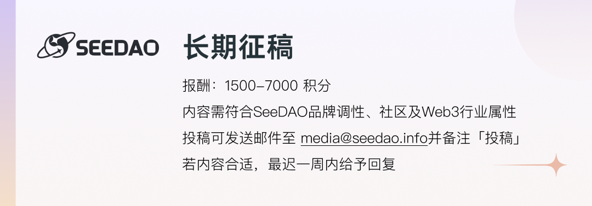

连基本投资知识都沒有的新手，是怎样在币圈活过來？
比特币，最初我只是在新闻听过这个名字，只知道是一种很酷的东西，当时的感觉就是一种新的付款方法。那时候最流行的非现金付款方式还是信用卡和支票。Payme，转数快，Googleplay ，以及各种二维码付款，还在准备诞生的路上。
到了再听到时，已经是上一个牛市尾声的时候了，那时候跟朋友吃饭，他跟我提及自己正在买 BTC，然后在他的协助下，成功创了自己第一个交易所帐户，也买了人生第一批 BTC 了。然后自己研究虚拟货币，也开始了损失金钱的路。这时候的我图表看不懂，什么叫牛市，什么叫熊市，我也不懂，没错，我就是这种连白纸都还没形成的超级纸浆新手。
在超级纸浆时期，我接触了很多种不同的赚币方法，让我对虚拟货币认识了更多，也让我明白陷阱也不少。
1：云挖矿

这是我第一个知道获得虚拟货币的方法，在云掘矿网站创一个帐户，然后虚拟货币来购买不同的计划，让你有更多的算力，这种方法让不懂掘矿的人，也可以轻易得到虚拟货币。
CryptoTab：
这是我第一个接触的掘矿 APP ，在手机下载就可以，轻易一按就开始掘矿，但是每十五分钟就要自己按一下很麻烦，而且基本算力很慢，我有想过购买加快速度的功能，由于它的加速功能是有时限，在计算后我差不多要每分每秒都要按掘矿，才可以真正回本，因此我最后没有购买。而用了几个月后也没有再用了。
不同的云掘矿网站：
云掘矿网站，我接触过的就有好几个了，但是很多都是骗局，而这些网站一般都有几个共通点：你推荐别人加入，你便可以得到额外奖励。创了帐户便有免费算力给你，也提供不同的计划给你。在初期出金是很正常，但是慢慢便会不能出金。
而我最深刻的一次，是我在数个不同的群组看到好多人讨论同一个云掘矿网站Ａ，看到很多人在讨论，因此感觉这是安全的，我连结到该网站，网站设计很有科技感，也放出他们的管理人员照片和合作机构，还有他们放出自己正在使用的矿机类型。因此我创了帐户，得到了少量赠送的算力来开始挖掘。
后来我转了部份 BTC 来加强掘挖速度，当然速度也增加，而且出金很快，在你申请出金后，约二十分钟就收到交易所通知已入帐。试了约数次后，我便再次入金加快速度，然而过了几天，有一些人讨论出金有点异常，有一些申请出金后，等了数小时也没有收到入帐。
当愈来愈多用户出现这个问题时，过了一天，这个网站已经在找不到了，连结只显示没有这个网站，不同的群组同时哭声四起，很多人都说自己放了多少 BTC 。当然我的本金也是零化了，这一次我当作是买经验，因为贪念而失去金钱。
在不久后突然又有人说发现新的挖掘网站，更说这网站是云掘矿网站Ａ的弟弟，之后我看到不同群组再一次出现各种讨论，然而在几天后，果然不出所料这网站也是消失了。而这一次我只是一名观众，看着他们再一次哭声四起。
２：私讯

在研究更多赚币方法时，我加入了一些群组，也有跟别人交流，看看会不会发现一些赚币的方法。
期间我收到了一个私讯，跟对方打招呼后，就跟对方交流一下各自赚币的方法，后来对方说自己用过我的赚币项目，但因为回本很慢，因此很快没有用了，反倒他自己用另一种质押掘矿方法，而且只需要在热钱包放入 USDT 就可以轻鬆掘了 ETH 。
起初我是拒绝的，但后来发现在热钱包不要把助记词及私钥告诉别人，基本上危险度不太高，因此就尝试一下了，起初在对方教导下，我只是放入一点约 200 USDT 。起初我是每天都可以收 ETH ，过了几天很快就把本金的 200 USDT 赚回来了，因此我把更多的 USDT 传到热钱包中，因而每天得到的 ETH 就更多了。到了最后我总共放了超过 2000 的 USDT ，但很快我就发现，我热钱包中的 USDT 突然被转走了，而且还被突然参加一个特别的活动。
我立即找对方查问一下为什么会这样，对方说这是网站的特别活动，他自己也尝试过，也得到奖励，你只要在指定自己内传入指定的 USDT 就可以取回 USDT 及任务奖励的 ETH ，我算过自己需要的金钱，基本上是自己一半的储蓄，由于感觉这赌博很危险，就没有进行这个任务，当然那些 USDT 最后也是不能取回。
然后在网上查了一些资料，原来还有一种方法是可以使对方不用助记词及私钥，就可以把你热钱包中的资金转走，这就是合约，原来我在跟网站进行签署的时候，就已经被对方埋下了陷阱，这是我失去最多金钱的一次。
３：GAME FI

玩游戏赚钱，这其实是我从小开始就想做的事，因为我希望家人明白，游戏不一定只是一种浪费时间的活动，因此我开始研究和加入GAME FI这个类别，慢慢认识不同游戏，在研究途中也接触 PancakeSwap这些中心化交易所。
我接触的 GAME FI 项目应该有十个左右，有像 MOBOX 一样大型，有的更是已经结束营运了。
我会找不同的 GAME FI 影片来看，也会了解游戏玩法。有本份游戏更是获利过，但原来 GAME FI 跟普通游戏有很大的不同，这让我最后也是损失本金而回。
GAME FI 跟普通游戏最不同的地方是，GAME FI 的游戏币会受到市场影响，不论是气氛还是抄卖，都会影响市场价值。
以 MOBOX 为例，MOBOX 是我第一隻接触的 GAME FI ，起初我加入 MOBOX 时，稀有度较高的 NFT，每一隻都超过 300 BUSD，那时候游戏币 MBOX，每一枚约８ 至 10 USDT ，当时游戏还是很流行，因此不论 NFT价格和代币价格也很高。我一次又一次获利再买新的 NFT来增加算力，差不多用了超过 1500 BUSD。但随著熊市来，现在所有价格只是当初的５ 至 15％。要回本不知道需要多少时间了。
现在熊市过去，MBOX 流通量很明显下降，买卖不容易交易成功。所以最终我也选择放弃这游戏。
４：去中心化交易所
第一次接触这种交易所，是因为我正在了解 GAME FI 跟双币理财，因此认识了这种交易所，而第一个接触的去中心化交易所，就是 PancakeSwap ，因为我需要利用它来兑换某些 GAME FI 的游戏币。
PancakeSwap 让我知道，世界上还有很多不知名的代币，当中有很多都是 GAME FI 的游戏币，还有一些新项目的代币。但可惜是有很多代币因为不同原因，慢慢连正常交易也做不到。
使用 PancakeSwap 最深刻的一次就是我赚取了约500 BUSD，这是因为我加入了一个双币理财矿池，它是由BNB 与一隻GAME FI 代币一ETERNAL 组成的矿池，该GAME FI 项目在当时是非常非常有名的，因此当时代币价值很高。我增添流动性到矿池后，有一天发现我持有的价值上升了，让我感觉先收网比较好，最终就退出流动性，带着收益走了。
可是过了一段时间，心痒的我看到它的流动性和价值也保持继续，就再一次兑换 ETERNAL 和 BNB 加入流动性，但不久后，GAME FI 项目出现崩溃，ETERNAL 价值直插地底，我的资金又再一次被化为零了。
这一次让我明白，投资项目一定要小心，而且也要多注意变化，因为市场会不断改变，每一种变化都可以影响你的金钱。
５：其他

当时正是熊市时期，整个世界的经济都受打击，不论股票还是币圈都死伤惨重。因此这时候我决定暂时退出，静待时间。
这段时间我认识了 NOISE 这个网站，它是一个像 FACEBOOK的网站，你只要把你的生活分享，跟其他用户互动，就可以赚取 BCH ，这是一个很好的网站。后来它移动到新的网站时，我还有使用，但是新网站赚取 BCH 的方法让我不明白。
在旧网站时，当别人赞你的发文时，系统会给你少量 BCH ，但今额到达 0.01 USD 时就会自动转为 BCH 到你设定的帐户中。但因此有人利用 BOT 来进行帐号中的互赞，以赚取 BCH 。
在新网站初期，我收到 BCH 的方式就变为不明确，除了其他用户给予 BCH 支持外，有时候没有发文，但跟别人交流也突然收到 BCH ，有时候发文反倒没什麽 BCH ，而后期这些情况愈来愈不明显，加上当时我开始认识了 LIKECOIN 和 MATTERS ，因此我慢慢把生活分享，慢慢搬到 MATTERS 。
经过以上种种事件，我慢慢了解到别人所说的［人间一天，币圈十年］，［虚拟货币是一种高风险的投资产品］这些说话了。
在接触虚拟货币后，连当初教我开设交易所帐户的朋友也感觉惊讶，因为在他还是利用交易所买卖 BTC 时，我已经把各种领域也进行初步接触，当然。。。。。。我的损伤也很重。
在数年后的今天，我虽然不是什么投资大师，币圈高人，如果要我跟其他新人投资者分享一下心得，以下就是我现时对虚拟货币的看法了。
［虚拟与现实，其实是一网之隔］
在网络世界上接触的事，其实都是各种生活于现实世界的人，以各种行动交集出来的，因此每一个虚拟货币和项目，都是不同的人制造出来，在现实世界都有好人与坏人，那麽在虚拟世界同样会有，所以项目是好是坏，一定要先了解清楚，才行动，除非你想像我一样，看着自己的钱不断飞走。
［心态第一，技术第二］
现时我还不太懂分析图表，什么Ｍ字底，Ｗ顶部，我还是不懂判定方法，但是一个冷静的心态，其实更重要，不论在股票还是币圈，当你进场后，如果不够冷静，很容易因为价格的改变，使你进行错误行动。
另外你有技术，但是心态不足，你可能会不断犹疑自己做的决定，最后一次又一次错过最佳的行动时机。
因此作为投资者，心态其实是比技术，更重要的东西。
［自己搜集＞相信别人］
在投资世界，请不要乱相信任何人，自己希望了解的资讯，请自行搜集不同的资讯来了解。跟人交流也不要盲目相信别人的说话，特别是以高效赚钱为名的项目或方法，这些往往都是陷阱，而且多人讨论也不一定是安全，可能是骗子精心设备的布局。
____
更多文章：
内容｜icebee321
排版｜Bo
审核｜ T1NG
